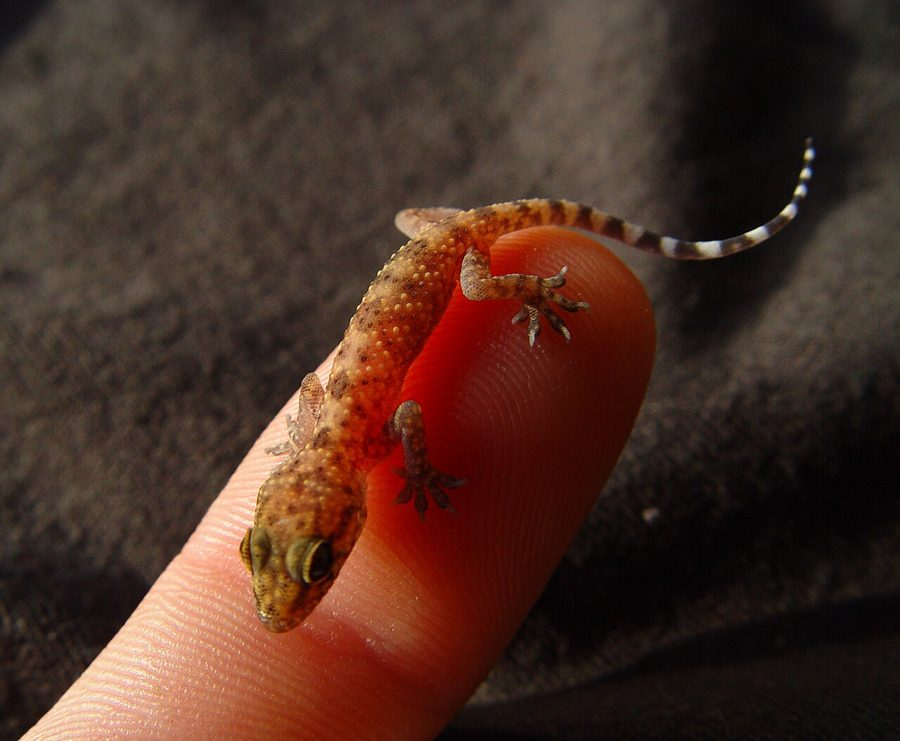

घर की छिपकलीAsian House Gecko
Hemidactylus frenatus · Gekkonidae · REP-0007

- Scientific name
- Hemidactylus frenatus Duméril & Bibron, 1836
- Family
- Gekkonidae
- Hindi
- घर की छिपकली
- Status here
- native
- IUCN
- LC
When to look कब देखें
Present all year.
घर की छिपकली / Asian House Gecko
Hemidactylus frenatus Duméril & Bibron, 1836 — Gekkonidae
घर की छिपकली — पूर्वी उत्तर प्रदेश के प्रत्येक ग्रामीण और शहरी घर में पाई जाने वाली एक अत्यंत परिचित और घरेलू छिपकली। इसका शरीर हल्का गुलाबी-भूरा या पीला-धूसर होता है, जो कभी-कभी अर्ध-पारदर्शी दिखाई देता है। इसके पैरों की उंगलियों के नीचे सूक्ष्म रेशों की गद्दियां होती हैं, जिनकी मदद से यह दीवारों और छतों पर बिना गिरे आसानी से दौड़ सकती है। रात के समय यह बल्बों के पास आकर मच्छरों, मक्खियों और पतंगों का शिकार करती है। रात में इसकी तेज, बार-बार की जाने वाली टिक-टिक (चहकने) की आवाज इसकी एक विशिष्ट पहचान है।
Quick Identification त्वरित पहचान
| Feature | Description |
|---|---|
| Form | Small, flattened body with a broad head; skin is smooth with small, scattered round tubercles on the back |
| Coloration | Pale pinkish-grey, tan, or yellowish-white; can change shade slightly to match surroundings |
| Feet | Expanded toe pads (subdigital lamellae) split in the middle; clawed digits for vertical climbing |
| Tail | Slender, cylindrical, with small whorls of spines; easily detached and regenerated |
| Vocalisation | A loud, repetitive chirping or clicking sound like chik-chik-chik, produced in rapid succession |
Field tip: Look for a small, pale-colored lizard crawling on walls near light fixtures at night. Squeezing into narrow crevices when disturbed, it is easily identified by its climbing ability and its distinctive, loud clicking calls.
Morphology आकारिकी
Biometrics (typical measurements for adults in northern India):
| Measurement | Range |
|---|---|
| Snout-vent length (SVL) | 45–65 mm |
| Tail length | 50–70 mm |
| Weight | 3–6 g |
Body: Moderately flattened, with a head distinct from the neck. The skin is delicate and covered in small, granular scales interspersed with irregular, smooth, rounded tubercles along the back.
Feet: The toes are widely expanded underneath, covered in divided rows of microscopic hair-like structures (setae). These setae use van der Waals forces to adhere to surfaces, allowing the gecko to walk vertically on concrete, wood, and glass.
Tail: Cylindrical, tapering, slightly longer than the snout-vent length, featuring regular whorls of small spines on the dorsal surface. The tail can be detached (autotomy) at specialized fracture planes when seized by a predator, wriggling independently to distract the attacker while the lizard escapes. A shorter, darker, smooth tail regenerates in its place.
Eyes: Large, with vertical slit pupils. Geckos lack movable eyelids; the eye is protected by a transparent spectacle scale, which the lizard cleans periodically by licking with its broad tongue.
Ecological Role पारिस्थितिक भूमिका
Nocturnal insectivore. Hemidactylus frenatus is a highly efficient insectivore. It congregates around artificial light sources at night to feed on mosquitoes, houseflies, moths, termites, and spiders. It acts as a primary biological pest control agent inside domestic environments.
Prey item. Geckos and their eggs are a key food resource for domestic cats, larger spiders, birds (such as owls, crows, and mynas), and garden lizards.
Life Cycle / Phenology जीवन चक्र
- Active season: Active from March to November. During winter (December–February), they hibernate inside dark wall cracks, behind electrical switchboards, or in roofs.
- Mating: Mating occurs in spring (April–May). Males use territorial clicking calls to attract females.
- Egg-laying: Females lay a clutch of exactly 2 round, hard, calcium-shelled eggs in dry, dark crevices (behind photo frames, in cupboard corners).
- Hatching: Eggs hatch in 40–60 days. Hatchlings are miniature replicas of the adults, measuring about 2 cm in total length.
Host Plants or Prey आहार
Primary prey items:
- Mosquitoes (Culex and Anopheles spp.).
- Houseflies and hoverflies.
- Agricultural pest moths attracted to light.
- Small spiders and winged termites during emergence flights.
Predators / Natural Enemies शत्रु
- Feral Cats — Hunt geckos on walls and floors.
- House Crow (Corvus splendens) and Common Myna (Acridotheres tristis, BRD-0006) — Snatch geckos from window sills.
- Huntsman Spiders — Large household spiders that prey on young geckos.
- Bronzeback Treesnakes — Hunt geckos in garden trees and rafters.
Agricultural / Human Relevance कृषि प्रासंगिकता
Domestic pest control. By consuming large volumes of mosquitoes, flies, and crop moths, geckos directly reduce disease transmission risks and agricultural pest populations around farm homes.
Cultural beliefs. In Uttar Pradesh, the house gecko is linked to various traditional superstitions (Shakuna Shastra). The sound of its chirp during a conversation is sometimes believed to validate the truth of what was said. The falling of a gecko on different parts of the human body (chhipkali girna) is interpreted as an omen of good or bad fortune.
Expected Locally स्थानीय रूप से अपेक्षित
Not a field record. Written from published accounts for eastern Uttar Pradesh. No confirmed local sighting yet — if you have seen it, that is what the atlas needs.
अभी तक स्थानीय पुष्टि नहीं। यह विवरण प्रकाशित स्रोतों से है, किसी अवलोकन से नहीं।
Extremely common in every household, school, and office building across Basti district. At night, they are easily observed waiting patiently near veranda tube lights. During early winter, they become noticeably slower and seek shelter in narrow crevices, disappearing from open walls until spring.
Distribution वितरण
Global range: Native to tropical and subtropical regions of South and Southeast Asia; widely introduced and established as an invasive species in tropical areas of the Americas, Africa, Australia, and the Pacific islands.
In India: Abundant throughout the mainland and islands, particularly in association with human habitations.
In Uttar Pradesh: Ubiquitous in all urban, suburban, and rural settlements across the state.
In Basti district / eastern UP: Found in virtually every village home and agricultural storehouse.
Range notes: No significant range changes documented.
Research Questions शोध प्रश्न
Anyone can investigate these | कोई भी इन प्रश्नों की जाँच कर सकता है
- Do house geckos capture more prey near white LED lights compared to yellow incandescent bulbs in your home? / क्या घरेलू छिपकलियाँ आपके घर में सफेद एलईडी (LED) लाइटों के पास पीले बल्बों की तुलना में अधिक शिकार पकड़ती हैं? — Count the number of successful strikes in 30 minutes under both lights.
- How does the frequency of gecko clicking calls vary with changes in evening humidity during the monsoon? / मानसून के दौरान शाम की आर्द्रता (नमी) में बदलाव के साथ छिपकली की टिक-टिक की आवाज की आवृत्ति कैसे बदलती है? — Record calls during humid vs. dry nights.
- What is the typical regeneration rate (in millimetres per week) of a lost tail on geckos in your area? — Monitor and photograph a marked gecko with a regenerating tail.
- How many geckos share a single outdoor light source, and do they show aggressive territorial behaviour? / एक ही बाहरी बल्ब के पास कितनी छिपकलियाँ शिकार साझा करती हैं, और क्या वे आक्रामक व्यवहार दिखाती हैं? — Map positions of geckos near a porch light over a week.
- Where do geckos lay their eggs in your house, and do they use the same nesting site repeatedly? — Locate gecko egg shells and check for new eggs in different seasons.
Similar Species मिलती-जुलती प्रजातियाँ
| Species | How to tell apart | हिंदी |
|---|---|---|
| Brook's House Gecko (Hemidactylus brookii) | Bark-like texture; back has regular rows of prominent, sharp tubercles; prefers outdoor trees and stone walls | जटिला छिपकली — खुरदरी छाल जैसी त्वचा |
| Flat-tailed House Gecko (Hemidactylus platyurus) | Tail is strongly flattened with serrated lateral margins; skin has webbed toes | चपटी-पूंछ छिपकली — चौड़ी पूंछ |
| Garden Lizard (Calotes versicolor) | Much larger; diurnal; scales are large and keeled; has movable eyelids; lives in bushes | गिरगिट — बड़ा आकार, दिन में सक्रिय |
Field rule: Smooth pinkish-grey skin, split digital lamellae under the toes, and a tail with small spines, combined with a loud chik-chik-chik nocturnal call, identify Hemidactylus frenatus.
Taxonomy & Classification वर्गीकरण
Original description. André Marie Constant Duméril and Gabriel Bibron described the species as Hemidactylus frenatus in 1836 in their classic work Erpétologie Générale (Vol. 3, p. 344). The type locality is Java, Indonesia. The genus name Hemidactylus is derived from the Greek hemi (half) and dactylos (finger), referring to the split toe pads. The specific epithet frenatus means bridled or harnessed in Latin.
Subspecies. Monotypic — no subspecies are currently recognised.
Family and order placement. Placed in the order Squamata, suborder Sauria, family Gekkonidae. Gekkonidae is a species-rich family of lizards characterized by vocalizations and adhesive toe pads.
Phylogenetic notes. Hemidactylus is a highly successful genus of geckos. Genetic studies indicate that Hemidactylus frenatus represents a widespread lineage originating in Southeast Asia.
IUCN status rationale. Listed as Least Concern (LC). The species has an extremely large global distribution, is highly abundant, and benefits directly from human urbanization, which provides abundant food and nesting sites.
Photo Gallery फोटो गैलरी
References संदर्भ
- Duméril, A.M.C. & Bibron, G. (1836). Erpétologie Générale ou Histoire Naturelle Complète des Reptiles. Vol. 3. Roret, Paris, p. 344.
- Smith, M.A. (1935). The Fauna of British India: Reptilia and Amphibia. Vol. 2 — Sauria. Taylor & Francis, London.
- Daniel, J.C. (2002). The Book of Indian Reptiles and Amphibians. Bombay Natural History Society, Mumbai.
- Russell, A.P. (1975). A contribution to the functional morphology of the foot of the Gekkonidae. Journal of Zoology, 176(4), 437–476.
- Zoological Survey of India (ZSI) — Reptile Fauna of Uttar Pradesh.
- GBIF Occurrence Data — Hemidactylus frenatus, Uttar Pradesh (2010–2025).
Source file: species/fauna/reptiles/house_gecko.md